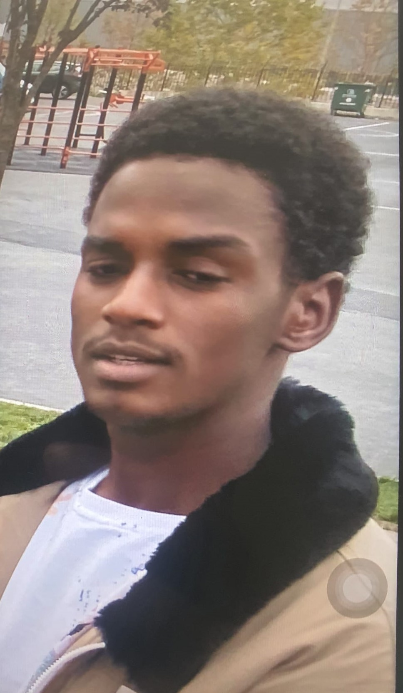
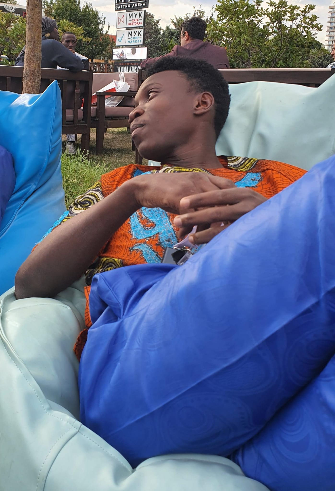
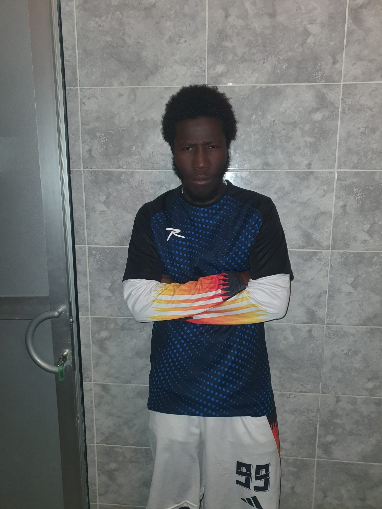
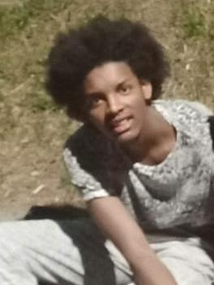
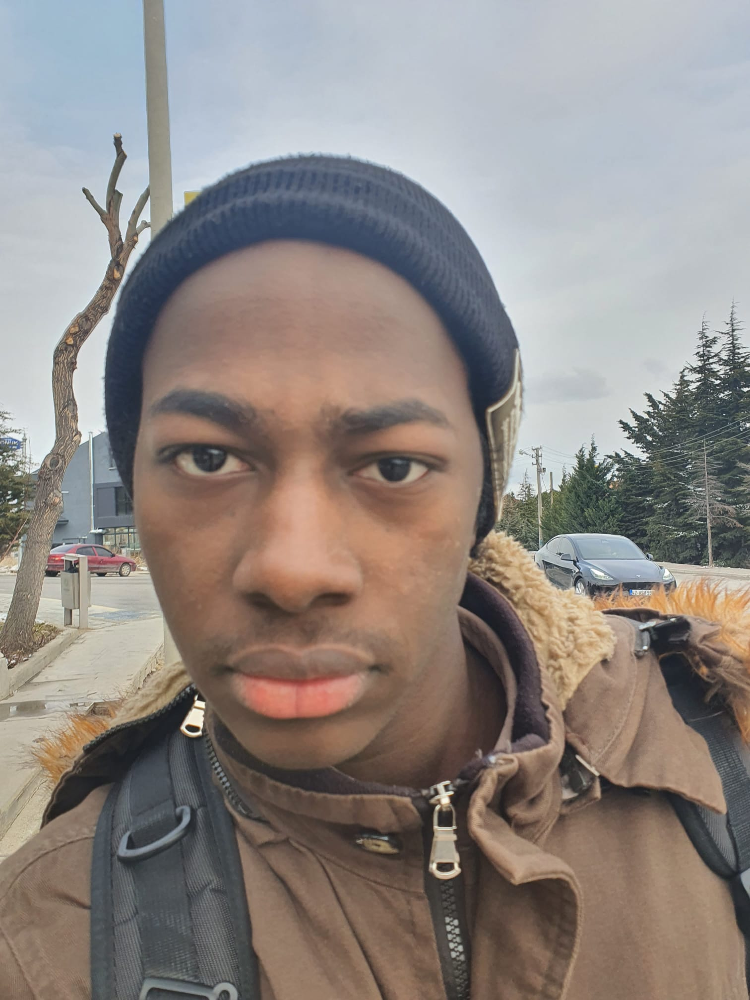

LEADERSHIP EN GESTION D'APPROVISIONNEMENT

Plus de 15 ans d'expérience sur le terrain et en gestion de stratégies d'approvisionnement international et de partenariats institutionnels.
ACCÈS: NIVEAU 5
Architecte principal de l'établissement des lignes d'approvisionnement et de la coordination avec les partenaires logistiques.
ACCÈS: NIVEAU 5
Expert en gestion budgétaire, investissements et flux financiers pour les projets d'approvisionnement B2B à grande échelle.
ACCÈS: NIVEAU 5
Coordinateur principal des relations institutionnelles et de l'exportation en Afrique subsaharienne (Mali, Niger, Tchad, etc.).
ACCÈS: NIVEAU 5
Spécialiste de la sélection des équipements tactiques et de l'intégration technique des textiles militaires selon les exigences du terrain.
ACCÈS: NIVEAU 5POINT STRATÉGIQUE D'ASSURANCE ET DE FIABILITÉ
NK International est le partenaire B2B de confiance reliant l'excellence de la production turque aux besoins institutionnels du continent africain, avec une spécialisation dans les textiles militaires et les équipements tactiques.
Notre domaine d'expertise se concentre exclusivement sur la fourniture d'uniformes de haute qualité, d'accessoires de terrain et d'équipements de protection. Notre force réside dans la gestion précise de votre chaîne d'approvisionnement. En étroite collaboration avec nos partenaires logistiques experts, nous coordonnons l'exportation sécurisée de la Turquie vers l'Afrique, garantissant une livraison fiable, transparente et adaptée aux réalités du terrain.
Fournir des textiles militaires et des accessoires de terrain durables pour assurer la sécurité de votre personnel. Notre mission est de simplifier vos achats en Turquie grâce à une coordination rigoureuse de l'exportation avec nos partenaires logistiques.
Devenir le partenaire d'approvisionnement B2B le plus privilégié en Afrique de l'Ouest et dans la région du Sahel, reconnu pour la qualité de nos équipements tactiques turcs et l'excellence de notre réseau d'exportation.